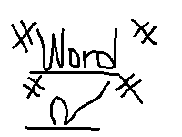
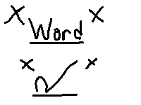
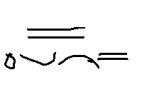
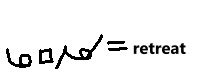

DaKi Gregg Shorthand Modifiers
Why I made this mod?
Gregg Shorthand is great and fast and amazing overall but sometimes it is difficult to differentiate symbols
and characters. Such as the letter "A", "E" and the big "A". Or strokes like "B" and "P" are mistakenly
written.
This mod may help with these problems but may hinder speed. The good thing about this mod, it helps reduce
space consumed and improve readability to some degree... Hopefully.
Things this mod will tackle
The concepts here won't be over-discussed with great explanation or strict rulings to follow, you may even
break some of these custom made rules/mod and modify the system more according to what you think is great.
1) Alternate letters
2) Custom/mod symbols
3) Some Custom briefs
Who is this mod potentially for?
1) For people who mostly writes in full and not in briefs
2) For people trying to save space on the page or paper
3) For people who struggles to differentiate letters and characters
Note: This is made by a hobbyist of 3 months experience in Gregg Shorthand and not a professional
Custom Symbols
Note:Some of this Symbols may be the same as the Original Gregg Shorthand or even conflict.
Also all symbols are hand drawn witha mouse.
Double Quotation
- basically a normal quotation with a single slash intersecting both lines. [line
is for readability only]

Single Quotation
- is a normal quotation but with a single slash intersecting the tick of the
quotation. [line is for readability only]

EN-Dash
- basically a "-" under a "-" or you can call it the "n" of Gregg. Ex:
Re-build

EM-Dash
- basically a "_" under a "_" or the "m" of Gregg. Ex: I will go –

Equals sign
- 3 "n"'s of Gregg on top of each other.

Spelled out signal/identifier
- when any character or letter is within the triangle symbol it means it is to be
read as a letter even when written out as a word. useful for writing abbreviations faster. Or
alternatively encircle the set of characters you want to abbreviate


Join character
- Represented by a small square between 2 phrases. Used when words keep on hitting
beyond the ceiling or the floor and want to save space.

Force Abbreviation: after a word is written down, it is followed by the letter "a", encircled
with a triangle, despite the word being a brief it will be read as "spelled out" since of this indicator
Force Expansion: Forces any abbreviation to be read as a full word incase of tired writing out full.


Alternate Letters/Characters
Alternate letters may help reduce using space especially when you are trying to form a word, and there is
text above it and sometimes conflicts with it or you feel the stroke is unnecessary long and don't know the
brief of it.
Generally I use some of these frequently and some not so much, so it's up to you whether you want to use it
or not, but I will have a rating system of whether its good to use it: Great, Neutral, Bad.
Well... Bad ones are bad, but they are good to save speed
but the benefit is rather not great of an effort
and better to learn its brief of it, if it has any.
Great meaning, I use it quite a lot when I am freestyle
writing and don't know the brief to that word. And it is quite practical to use it at least for my
preference.
As for neutral rating, I kinda use it but mehhh. So
it's pretty much up to you.

Letter B
The letter B is represented by a downward stroke with the length of a Ch/Sh of the Gregg
alphabet
Sample word: "Bending"

The letter G is represented in 3 different ways since I generally
don't know which to use from time to time.
1) An upward stroke of "J". Sample word: "Gain"
2) An letter "K" but with a line in the center. Sample word: "gram"
3) An upward stroke of "Ch/SH" with a line . Sample word: "great"


The letter D is basically a letter "N" of Gregg shorthand with a line
Sample Word: "Dots"

The sound that represents TD can either be formed using the letter "T" or even "D" incase you
overstroked. Then a line intersecting it.
Sample Word: "Belated"

Represented by a long "NG" or "NK". since "NG" is like a tick then BL is a very long tick,
occupying a whole line
Sample Word: "Black"

Represented by an upward CH or SH stroke
1) Sample Word: "Blatantly"
2) Sample Word: "Laughing"

Represented by the letter N with a triangle pointing upwards
1) Sample Word: "Manners"

For I, since I am somewhat a beginner to shorthand in general but had prior experience in
mechanical stenography (On a laptop keyboard via Plover). The letter Z or S is hard to differentiate from X
or you can easily mess up the stroke.
So you basically create a line above the letter which has the letter Z on
1) Sample Word: "Text"

This is used when using abbreviations or just for creative writing
1) Sample Word: "WTH"

created using the letter n with an "o" of Gregg
1) Sample Word: "menstruation"

created using the letter n with an "u" of Gregg
1) Sample Word: "Engagement"

An Afterword & my thoughts
Afterword
Before I decided to make this project I wrote on my notebook a little message that may inspire you and get an insightful idea or thought. Might also decide to show the Gregg variant of it too.
Message: "
'Journey of encoding'
Typing which used to be fun and somewhat "relaxing",
no longer is,
because my hands are getting tired from typing from each stroke.
Even if I were to get a mechanical keyboard, doubt it will do much.
From peak typing speeds of 75WPM and I am thankful for reaching such since that was my goal when I was
younger and should appreciate it,
though to my lows of potential 30s to 40s which are relatively slow, all because my fingers can't take much
more.
Through all this pain, tried doing mechanical stenography, it was great but the effort of collective fingers
pushing down on the keyboard of my laptop and its inefficient NKRO layout,
If I could've got a real steno keyboard, things might change but for now, that's out of my reach.
Might be should I just think my thoughts and never to inscribe them elsewhere...
or should just quit typing altogether...
And here I found Shorthand writing, you don't get collective effort of 2 hands but one is enough,
even if you won't get the peak writing speed of 300WPM as the professionals have reached.
The average of one is around that of 60-100, and that's around a none strict learning journey of 6-12months.
And plus the stress on writing isn't on your fingers, it's your wrists which ache and tire.
For the fingers only glide the direction for where they'll turn. And as of now, I write in Gregg shorthand
for around a 3 month non strict learning journey around 25WPM average for freestyle writing and around 40WPM
for practiced phrases and quotes.
And with all this it doesn't do much strain or even no strain at all to my fingers nor my wrist, since I've
not reached any major writing speeds like beyond the hundreds, yet unlike with normal writing in english.
around 35-38WPM with a messy handwriting but readable for myself though a strugggle for some who may read.
And when my speeds are in the slumps because of tiring and repetitive copying then writing, looking back and
forth, just to copy some notes... down I go to 17.
Oh man, huh, sure is not great. I would say to conclude this writing that shorthand has not changed my life
drastically but it has it benefits to a beginner regardless, being:
reduced strain & stress,
can write personal encoded messages,
can enjoy freestyle writing for fun. And a bit more.
still more to know and explore. After all different writing systems may not be for all but a great option
for those who may seek it, whether for one's own career, hobby or just the things in between. - Sincerely,
DaKi
"
Helpful Links
Here are some links that may help you understand more about Stenography and Gregg Shorthand. Hopefully this
may help you in your journey of writing & encoding.
Gregg Shorthand Github
YouTube | How to Learn Gregg Shorthand - Getting
Started
OpenSteno site